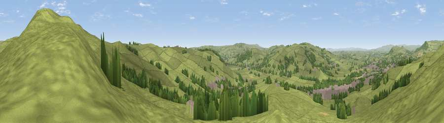

Viewpoint near Low Bradley
#16886 in England · top 27% of its area beats it · near Low BradleyWhere it is
The exact computed spot (SE 00425 49675). Click the marker for map links.
The view, rendered

A 360° render of this exact spot computed from the terrain model, tree cover and land cover — summer colours, afternoon light, calibrated against photographs of famous viewpoints. Real trees, hedges and buildings will differ in detail.
The panorama
Grey silhouette: terrain skyline in each direction (720 bearings, Earth curvature and refraction included). Dashed green: skyline with trees (+15 m) and buildings (+8 m) as obstacles. Blue strip: how far the ground is visible on each bearing.
Where the view opens
Wedge length = distance to the farthest visible ground on that bearing (vegetation-aware). Rings at 10, 25 and 50 km.
What fills the view
87% grassland · 9% woodland · 4% built-up
Angular shares of the visible panorama (visual magnitude), not map area. Landscape diversity 0.21 (0–1 Shannon).
Key numbers
More beautiful places nearby
The staircase of upgrades: each row has a higher view potential than everything closer. Driving times are estimates from straight-line distance, calibrated against real road routing — check an actual route before setting out.
| Place | Direction | Drive | Score |
|---|---|---|---|
| Viewpoint near Low Bradley | NE · 1 km | ~3 min | 66.3 |
| Viewpoint near Skipton | NE · 2 km | ~4 min | 68.0 |
| Viewpoint near Embsay | NNW · 6 km | ~13 min | 74.5 |
| Cracoe Fell | N · 9 km | ~18 min | 75.1 |
| Viewpoint near Bewerley | NE · 19 km | ~32 min | 75.7 |
| Viewpoint near Bewerley | NE · 19 km | ~33 min | 76.8 |
| Viewpoint near Otley | ESE · 20 km | ~34 min | 77.5 |
| Little Ingleborough | NW · 35 km | ~54 min | 78.8 |
53.94318, -1.99501 · source: screening · position refined by local search. Computed location — check access rights before visiting.